Аэроглиссер по болотам
Гонка на аэроглиссере по протокам Grassrivers.
В реальности:Аэроглиссер →
17 занятий, которые Rockstar показала в «Расширенном показе», с таймкодами — чтобы найти момент в видео. Ниже — то, что журналисты видели на превью.
19 в разделе: На воде · Спорт и гонки · Отдых · Дела · По превью журналистов
Гонка на аэроглиссере по протокам Grassrivers.
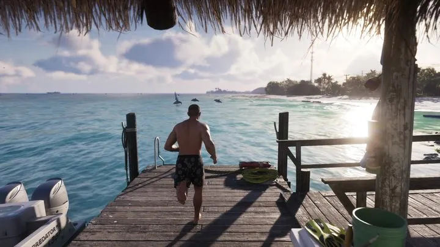
Разбег по деревянному пирсу — и прыжок в океан.

Прогулка на каяке среди яхт и высоток.

Трое рыбачат с катера у острова с пальмами.
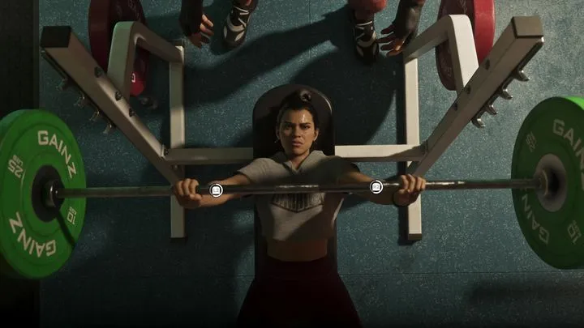
Штанга в зале Gainz.

Гонка на 16 машин по закрытой трассе.
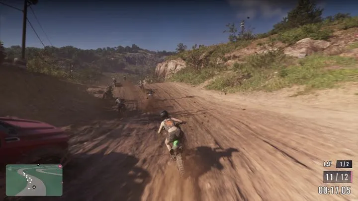
Гонка на кроссовых мотоциклах по грунту в холмах.
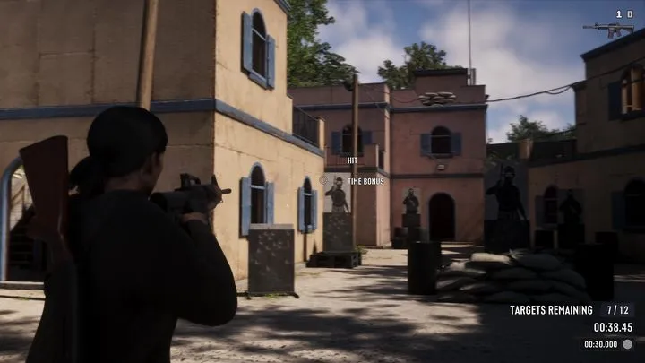
Стрельба по мишеням на время.
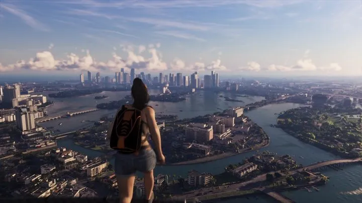
Свободное падение над Вайс-Сити и раскрытый парашют.

Шезлонги, жёлтые зонтики и самолёт с баннером над морем.
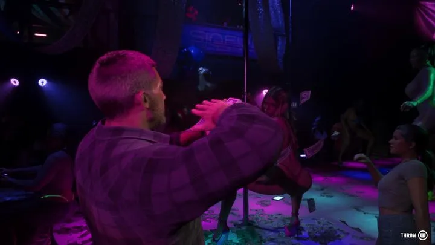
Танцпол и неон.
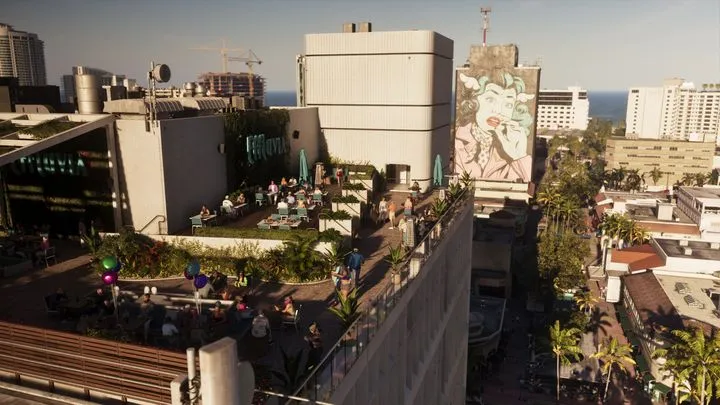
Свидание в баре Effluvia на крыше.
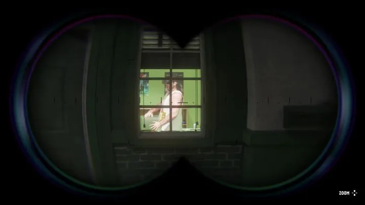
Вид через бинокль на окно дома напротив.
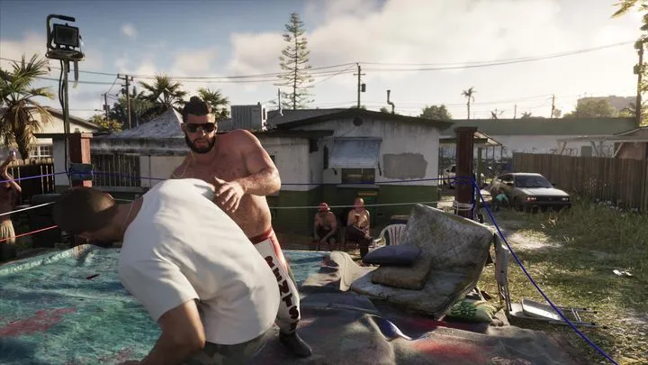
Самодельный ринг во дворе мотеля.
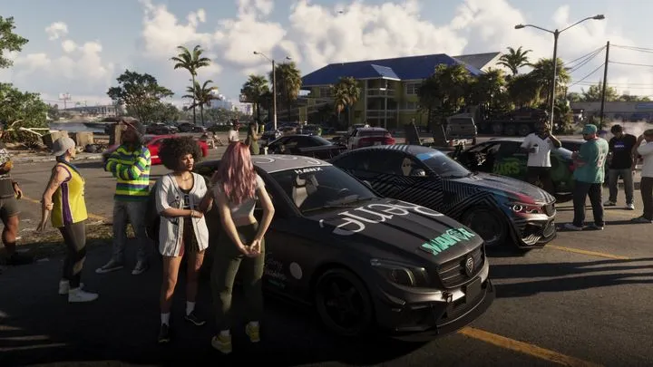
Машины и люди на парковке в финальной нарезке.
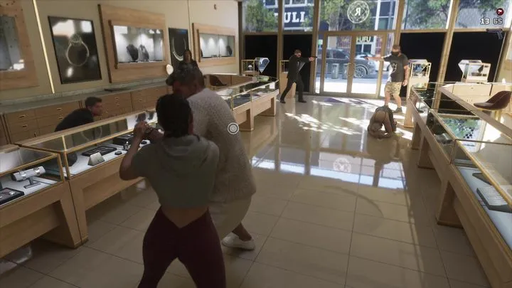
Витрины, люди на полу и охранник, который решил не геройствовать.
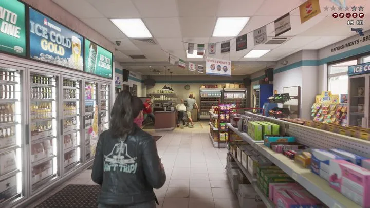
Джейсон и Лусия в банданах грабят магазин.

Парень лежит в открытом багажнике едущей машины и ведёт прямой эфир: «LIVE 51k», чат кричит «KING OF TRUNK!!».
Журналисты, видевшие игру, перечисляют ещё бильярд, мини-гольф, баскетбол, дайвинг, охоту и гонки по бездорожью.
Кадры: Rockstar Games (трейлеры 1 и 2, «Расширенный показ», официальные скриншоты). Источник у каждой карточки указан под названием. Обновлено: 3 октября 2026.
Каждый день — одно сравнение: кадр игры рядом с реальным фото. Подписывайтесь:
YouTubeInstagramTikTokДругие разделы справочника: Персонажи · Транспорт · Бренды и заведения · Механики · Животные · Регионы · Об игре